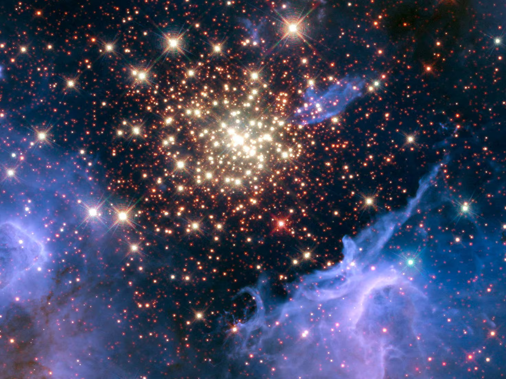
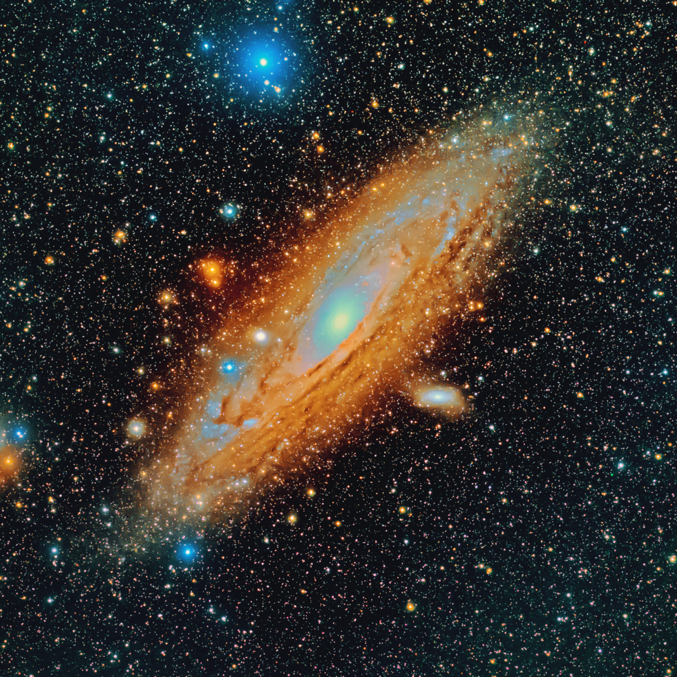
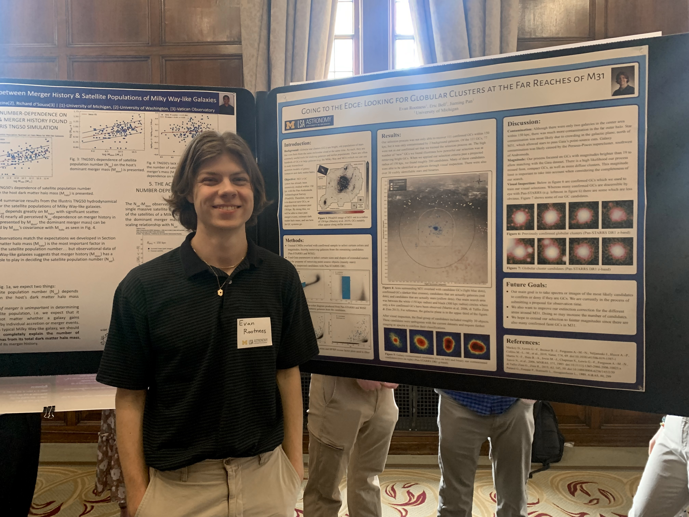
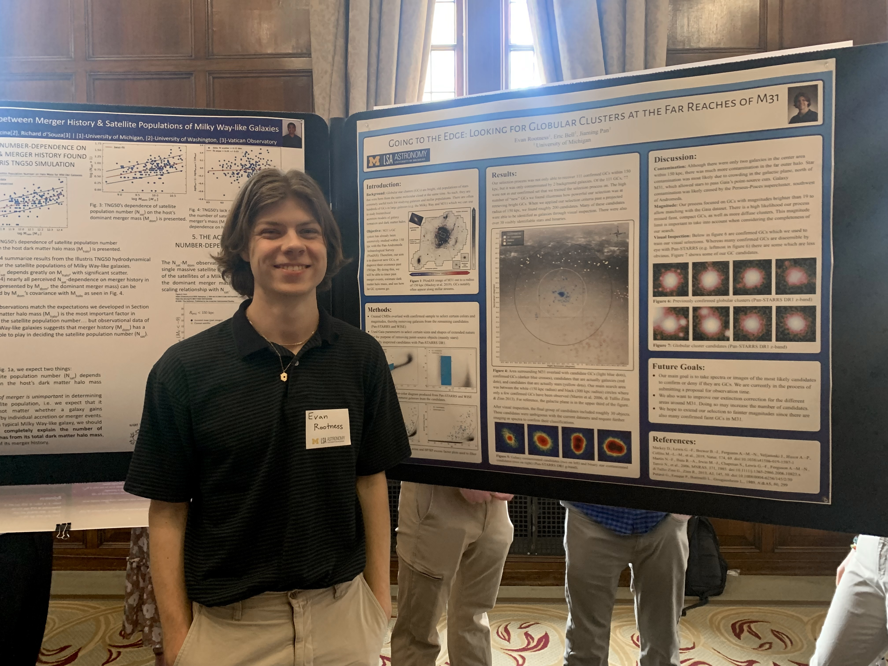
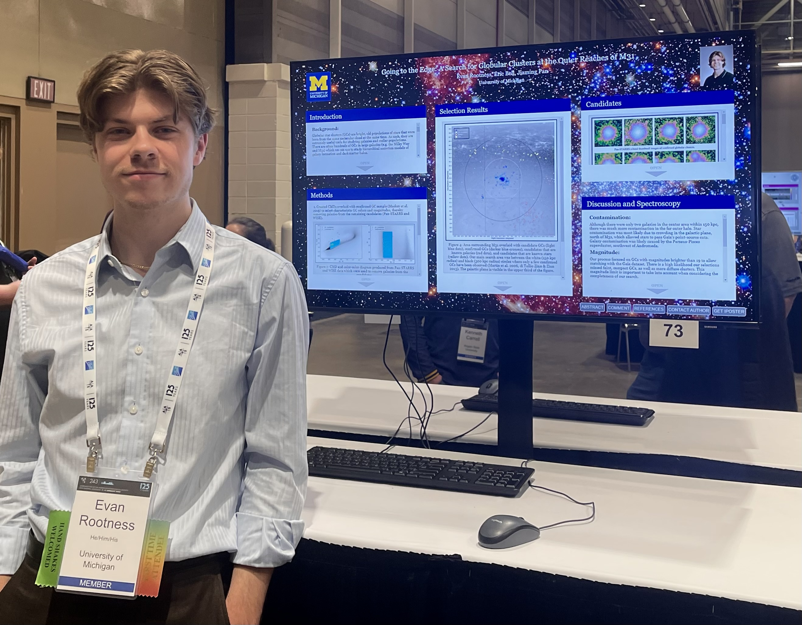
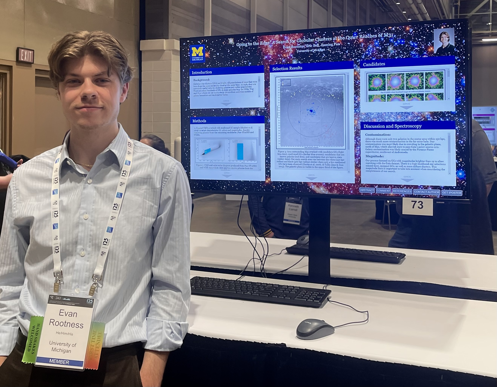

Searching for Globular Star Clusters in The Andromeda Galaxy

First off, what is a globular star cluster? Well, globular clusters (GCs) are collections of thousands to millions of stars (in a roughly spherical or "globular" shape) that were formed at the same time and in the same location. As such, they carry useful information about where they were formed and the histories of their parent galaxies.
Because GCs are so useful for understanding galaxy evolution and merger history, it's important to find as many of them as possible. Thus, my work focuses on trying to find new GCs in our neighbor spiral, The Andromeda Galaxy (right). More specifically, I'm looking for new clusters at extremely far distances from the center of Andromeda. When you search at the distances I'm searching at, where the "edge" of a galaxy is becomes pretty fuzzy. It's possible that any GCs we find could be deemed intergalactic, which would be a novel finding and really exciting!


This is my poster from the 243rd Meeting of the American Astronomical Society in New Orleans. Click on it to check it out!
 

 

Meetings and symposiums where I've presented my research.